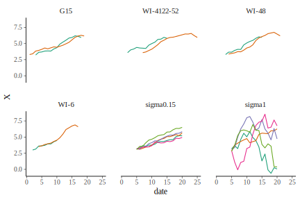
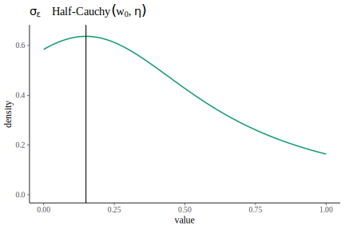
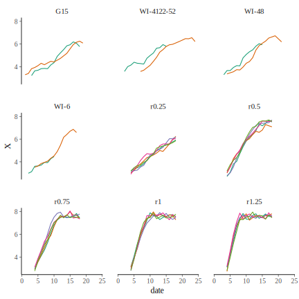
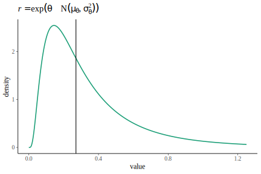
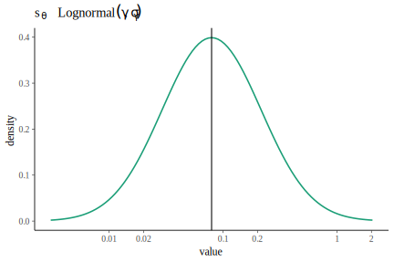
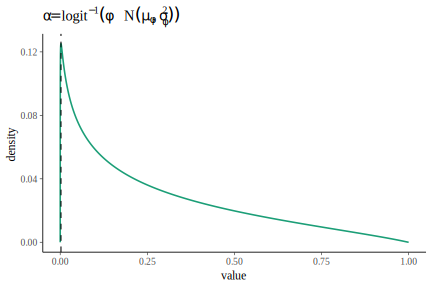
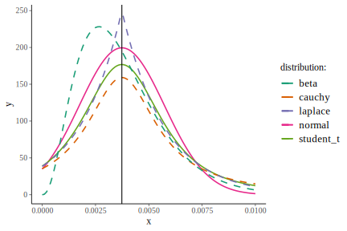
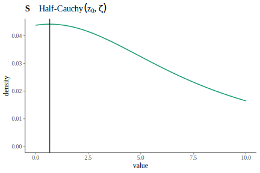

This document outlines the structure of the model and what priors are required. In general, my goal is to create weakly informative prior distributions:
We characterize a prior distribution as weakly informative if it is proper but is set up so that the information it does provide is intentionally weaker than whatever actual prior knowledge is available. (p 55, Gelman et al. 2014)
Gelman, A., J. B. Carlin, H. S. Stern, D. B. Dunson, A. Vehtari, and D. B. Rubin. 2014. Bayesian Data Analysis. Third edition. CRC Press, Boca Raton, FL, USA.
Below is the model I’m fitting:
\[ X_{t+1} = X_t + r \left( 1 - \alpha ~ \text{e}^{X_t} \right) + \varepsilon \]
where \(X_t\) is log aphid counts for a particular plant at time \(t\), \(r\) is the aphid line’s growth rate, \(\alpha\) is the line’s density dependence, and \(\varepsilon\) is process error.
Below, all mentions of \(Z\) refer to Z-scores (i.e., \(Z \sim \text{N}(0,1)\)). These are used to generate non-centered parameterizations of all distributions (see section 28.6 in the Stan Modeling Language User’s Guide and Reference Manual, version 2.17.0). Each \(Z\) in an equation is not referring to the same object, but to a separate Z-score used to generate deviates from the focal distribution.
Growth rates are bound \(\ge 0\) and have one estimate per aphid line, resulting in a vector of growth rates, \(\mathbf{R}\). The growth rate estimate for clonal line \(i\) is generated as follows:
\[\begin{align} \mathbf{R}_i &= \exp \left( \theta + s_\theta ~ Z \right) \\ \theta &= \mu_{\theta} + \sigma_{\theta} ~ Z \\ s_\theta &= \exp(\gamma + \sigma_\gamma ~ Z) \\ \end{align}\]Density dependences are bound between 0 and 1 and also have estimates for each line. They differ from \(r\) in that they also have variance within aphid lines, to account for effects of variability in plant resources affecting aphid density dependence. I used the inverse logit function to bound final \(\alpha\) estimates between 0 and 1. For clonal line \(i\) and plant \(j\), estimates are generated as follows:
\[\begin{align} \mathbf{A}_i &= \text{logit}^{-1} \hspace{-0.25em} \left( \phi + s_\phi ~ Z \right) \\ \mathbf{P}_{j} &= \text{logit}^{-1} \hspace{-0.25em} \left( \phi + s_\phi ~ Z + \mathbf{S}_{\mathbf{L}_j} ~ Z \right) \\ \phi &= \mu_{\phi} + \sigma_{\phi} ~ Z \\ s_{\phi} &= \exp(\delta + \sigma_\delta ~ Z) \\ \mathbf{S} &= \exp(\zeta + \sigma_\zeta ~ Z) \\ \end{align}\]\(s_\varepsilon\) is bound \(\ge 0\) and sampled as \(\sim \text{Lognormal}(\tau, \sigma_\tau)\) Based on simulations, an \(s_\varepsilon\) of 1 would be very high—so high as to be not realistically possible. Values of ~ 0.15 seemed to result in simulations matching some preliminary experimental results we’ve seen in the lab. Below, “sigma-1.90” is simulated data with process error set to -1.897, “sigma1” has process error set to 1.0. The others are the preliminary data.

To sample \(s_\varepsilon\), I chose a log-normal distribution with log(0.15) (-1.897) as the \(tau\) and 1 for \(\sigma_\tau\) because this results in low densities at values close to 1. Note that below, the x-axis is log-transformed, but axis labels indicate non-transformed values.

From data sent to me from A.R. Ives related to this paper:
Meisner, M. H., J. P. Harmon, and A. R. Ives. 2014. Temperature effects on long-term population dynamics in a parasitoid–host system. Ecological Monographs 84:457–476.
For fecundity, juvenile survival, and adult survival, the dataset had low and high estimates. I created two Leslie matrices, one with all of the high estimates and another with all the lower estimates. For each of these Leslie matrices, I estimated the intrinsic daily rate of increase (\(r\)) in aphid populations in the lab as \(r = \log(\lambda)\), where \(\lambda\) is the dominant eigenvector of the matrix. Thus I have fast and slow estimates of population growth to use as prior information about our population-growth assays.
#> fast = 0.2863
#> slow = 0.256I also simulated some data with \(r = \{ 0.25, 0.5, 0.75, 1.25 \}\) to compare the simulations to the preliminary data. Below, “rX” indicates a panel of simulated data with \(r\) set to the number X. The others are the preliminary data. From these simulations, values of \(r > 0.5\) seem pretty unlikely.

For the among-line mean of the log-transformed growth rates (\(\mu_\theta\)), I used mean(log(c(fast, slow))), -1.307. For the standard deviation of \(\mu_\theta\) (\(\sigma_\theta\)), I used sd(log(c(fast, slow))) * 10, 0.7922. I multiplied by 10 to add extra uncertainty because of the limited number of lines from which I derived my priors. In the plot below, I’ve exponentiated the x-axis so that it displays the values of \(r\) that would result.

For sampling \(s_\theta\), I use sd(log(c(fast, slow))) (-2.536) for the location parameter and 1 for the scale parameter. The latter was chosen to indicate even more uncertainty in \(s_\theta\) than in \(\mu_\theta\). Note that below, the x-axis is log-transformed, but axis labels indicate non-transformed values.

For density dependence, I’m going to use data from preliminary population-growth assays that used the same methods that we’re using. We conducted these assays on 4 aphid lines that we no longer maintain in the lab and won’t be using for our analyses or cage experiments.
If we look at the deterministic portion of our model…
\[ X_{t+1} = X_t + r \left( 1 - \alpha ~ \text{e}^{X_t} \right) \] … \(X_{t+1} = X_t\) when \(\alpha = 1 / \exp(X_t) = 1 / N_t\). Because each repetition is run until the plant dies and populations crash, I’ll assume that for each repetition, our estimate of \(\alpha\) is \(1 / \max(N_t)\).
Here is how I coded it:
prior_df <- load_prior_data() %>%
group_by(line, rep) %>%
summarize(alpha = 1 / max(N)) %>%
ungroup()
prior_df
#> # A tibble: 8 x 3
#> line rep alpha
#> <fct> <int> <dbl>
#> 1 G15 1 0.00205
#> 2 G15 2 0.00190
#> 3 WI-4122-52 1 0.00260
#> 4 WI-4122-52 2 0.00142
#> # ... with 4 more rowsFor estimates relating to the among-line distribution of \(\text{logit}(\alpha)\), I first calculated \(\text{logit}(\alpha)\) for each line-rep combo, then calculated the mean for each line. After that, I used the mean across lines, -6.130, as my prior for \(\mu_\phi\). I multiplied the standard deviation across lines by 10 (resulting in 3.162) for my prior on \(\sigma_\phi\) to decrease my certainty in estimates. For the plot below, I inverse-logit transformed the x-axis to show the resulting \(\alpha\) values from these priors. It still has pretty low densities above 0.5, which is reasonable because that would indicate a “carrying capacity” of < 2.

For the distribution of \(s_\phi\) values, I used the log-transformed SD for among-line mean \(\text{logit}(\alpha)\) (-1.151) for the meanlog parameter (\(\delta\)), and 2 for the sdlog parameter (\(\sigma_\delta\)). The latter was chosen simply because I’m not very sure of what it should be, and this value results in a pretty flat prior distribution. Note that below, the x-axis is log-transformed, but axis labels indicate non-transformed values.

For estimates relating to the within-line distribution of \(\text{logit}(\alpha)\), I first calculated \(\text{logit}(\alpha)\) for each line-rep combo, then calculated the standard deviation of these estimates for each line. After that, I used the mean of log-transformed SD estimates across lines, -0.9733, as my prior for \(\zeta\). I used \(10 \times\) the SD of log-transformed SD estimates across lines, -0.9733, as my prior for \(\zeta\). This results in the following weakly informative prior:
